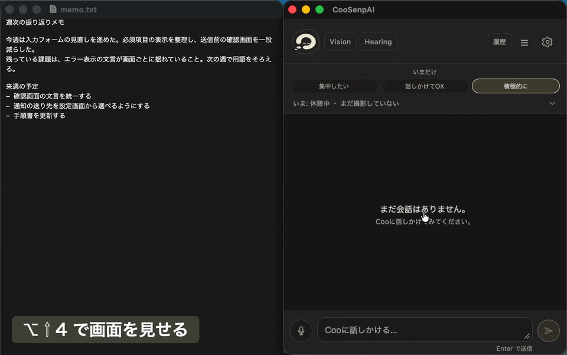
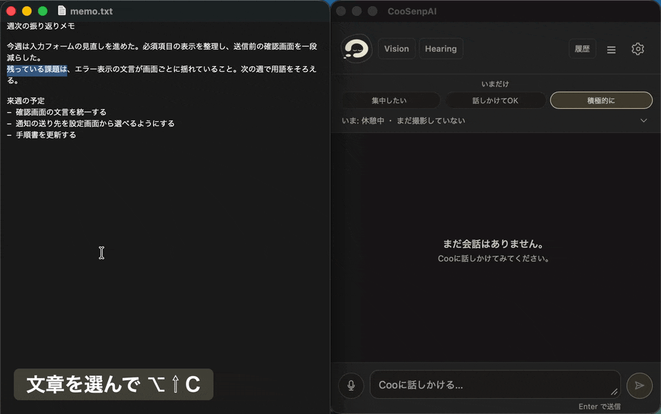
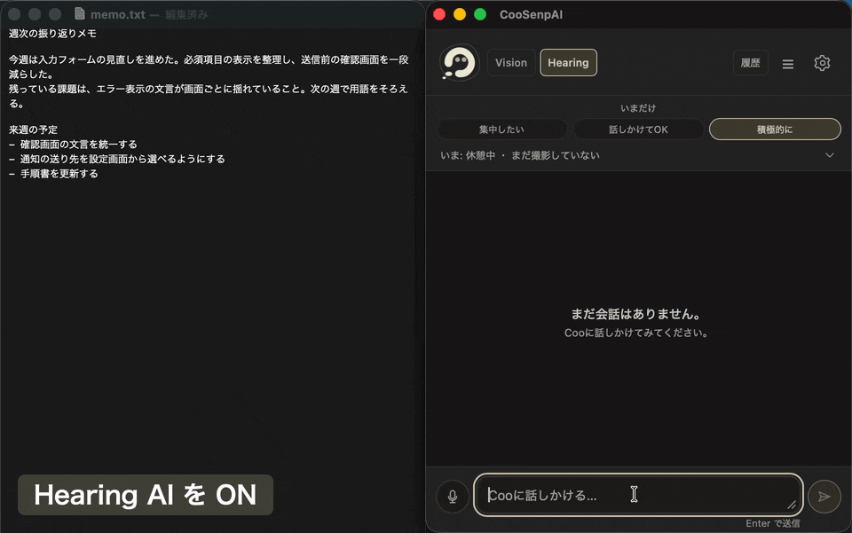
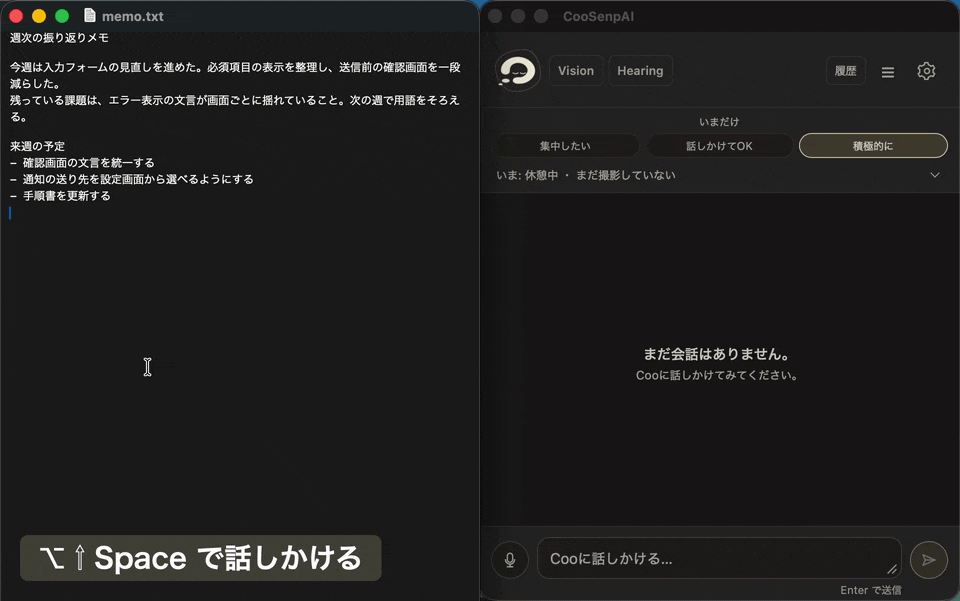
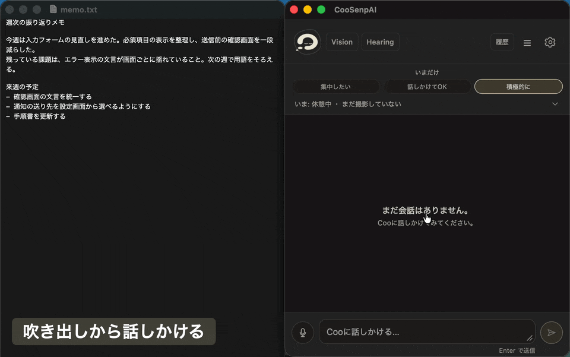
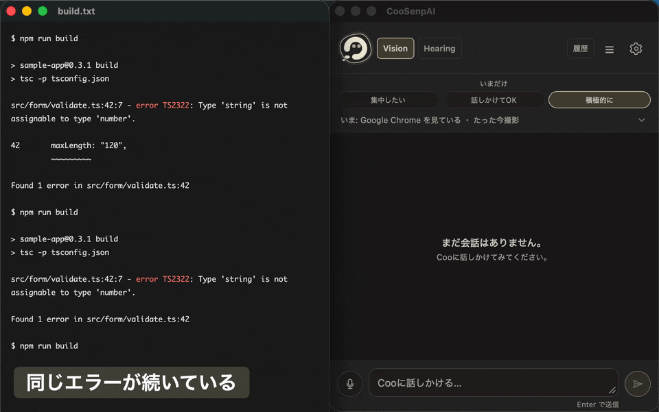

アレコレソレが通じるAI
見ているものを見て、聞いているものを聞く。だから指示がいりません。
困っていそうなときはAIが声をかけてくれます。
画面を見て通りましたね！原因のほうから直したのが効いてます。こういう直し方、好きです。
音声を聞いてあ、さっきの『金曜まで』は定例のほうの話ですよ。僕もちょっと身構えました。
無料。macOS 13 以降の Apple Silicon Mac。Claude Code か Codex か OpenCode を使っている人向け。
見ているものをAIに

スクショで伝える
エラーのダイアログや崩れたレイアウトは、言葉にするより見せたほうが早い。範囲を選ぶだけで、その場で聞けます。
キー⌥⇧4

選んで渡す
読んでいる文章を選んで押すだけ。貼り直さずに、翻訳や要約や「これどういう意味」をその場で頼めます。
キー⌥⇧C
聞いているものをAIに

聞き逃したところを聞き返す
会議や動画で流れていった一言を、「さっきの何だっけ」で聞き返せます。話しながら作業していれば、その内容に合わせて一言くれます。
聞かせる時間は自分で選べます。
起動メニューバーから Hearing AI を ON

話しかける
文字を打つより話したほうが早いときは、声で。話し終えたらもう一度押すだけです。
キーを押している間だけ話す方法も選べます。
キー⌥⇧Space

チャットする
考えを整理したいときは文字でゆっくり。さっき見せた画面や渡した文章について、そのまま話を続けられます。
起動吹き出しをクリック、または ⌥Space
AIが気づいて声かけ

困っていそうなときに声をかけてくれる
同じエラーで止まっているとき、テストがやっと通ったとき、吹き出しで短く声がかかります。
起動何もしなくていい
黙っているのが既定です
- 何も起きていないときは黙っています。
- 見せるアプリは自分で選べます。
- 聞かせる時間も自分で選べます。ON のあいだだけです。
- 吹き出しは 30 秒で消えます。
AIのイライラを最小限に
-
01
選んだ文章を貼り直さなくていい
エラー文を選んで ⌥⇧C。それだけで聞けます。
-
02
作業中のアプリから離れずに聞ける
ブラウザを開かず、いま作業中の画面の上で答えが返ります。
-
03
状況を一から説明しなくていい
画面も音声もすでに伝わっているので、「さっきの」で通じます。
だから、AIに何かを頼む前の手続きが消えます。
こんなときに
- エラー文を選んで、そのまま聞く。貼り直しも説明もなし
- 会議で聞き逃した一言を、あとから聞き返す。録音を巻き戻さない
- 書きかけの文章に、一言もらう。書き終わる前に
- 英語のドキュメントの段落を選んで、意味だけ聞く。翻訳アプリを開かない
- 同じエラーで三十分止まっていたら、向こうから声がかかる。黙って待たない
- ビルドが通ったとき、ちゃんと認めてもらう。頼まなくても
- 動画のこの図、何を言っているのか聞く。スクショで
- 独り言で「これ絶対落ちる」と言ったら、落ちる前に一言くる。聞いている
- 手が離せないとき、声で聞いて声で返してもらう。キーボードに触らず